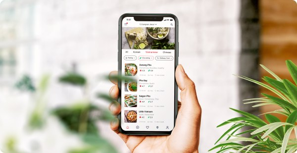
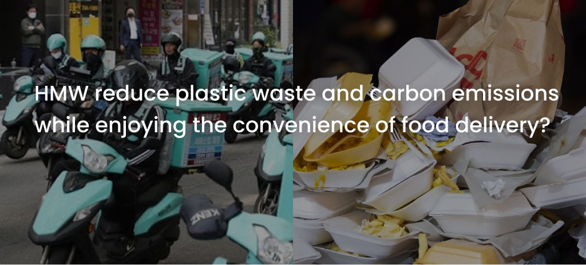
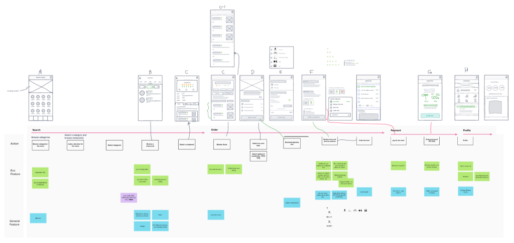
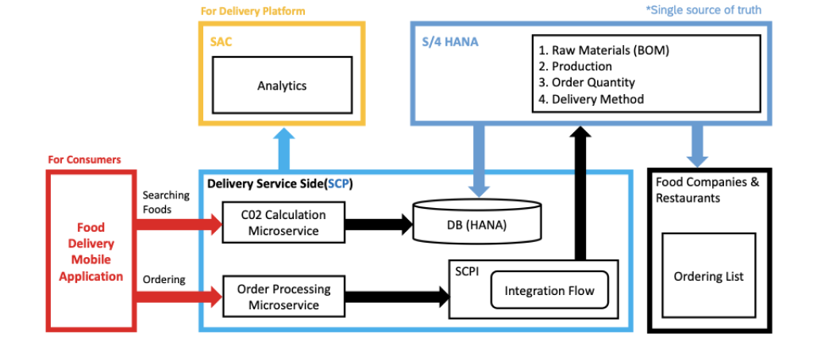
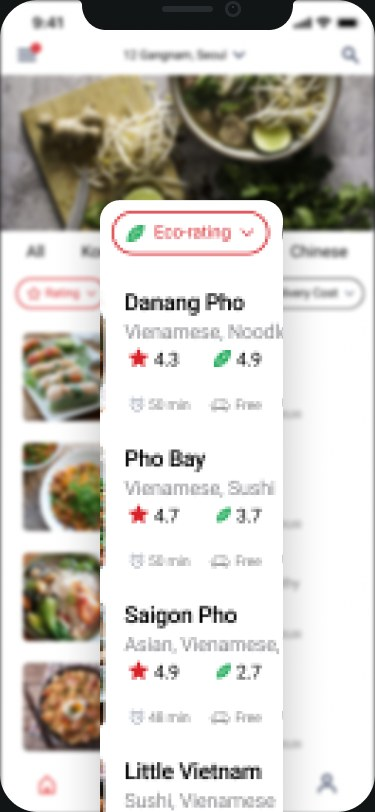
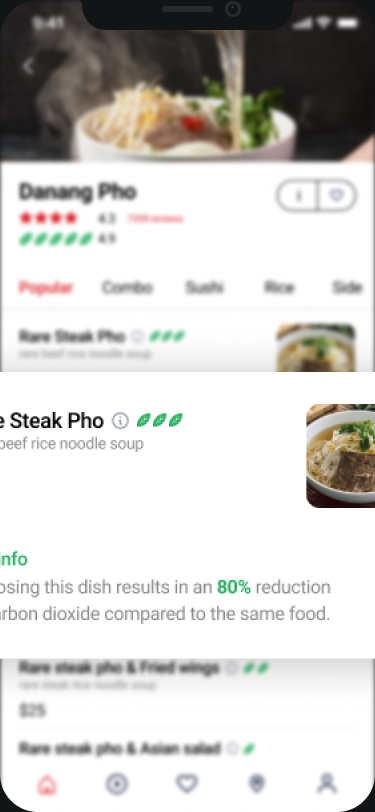
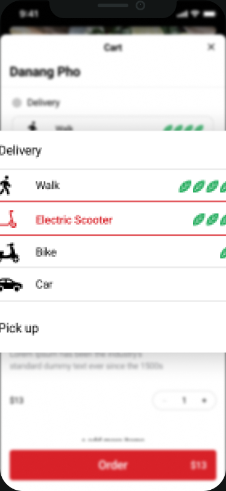
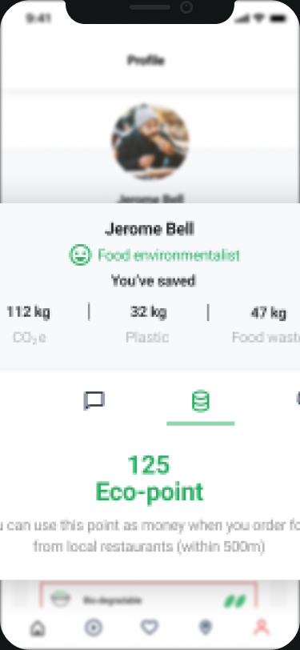

Food delivery in Korea has grown into a 10-billion-dollar industry — and a major source of plastic waste and carbon emissions. I designed an eco-friendly experience across the whole ordering flow, from choosing food to packaging and delivery.

Delivered food is convenient, but its packaging and transport are “out of sight, out of mind.” People have no information about environmental impact and no alternatives.

How might we reduce plastic waste and carbon emissions while keeping the convenience of food delivery?
I mapped rapid prototypes onto the ordering journey. Users relied heavily on reviews, ratings and appealing images — so eco-information had to work the same way.

To show how eco-scores could be calculated, I proposed a system landscape on SAP Cloud Platform: CO₂ is calculated from raw materials and production steps (S/4HANA bills of materials and recipes) and from actual order quantities.





Individual choices add up to a collective impact. With technology, it is possible to measure CO₂ from how ingredients are produced and distributed to how food is cooked and delivered.